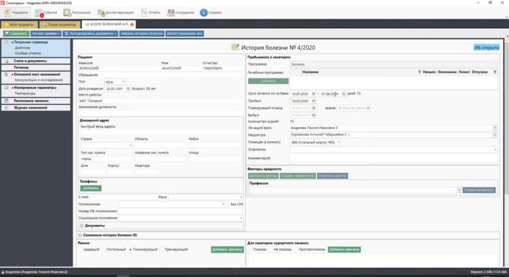
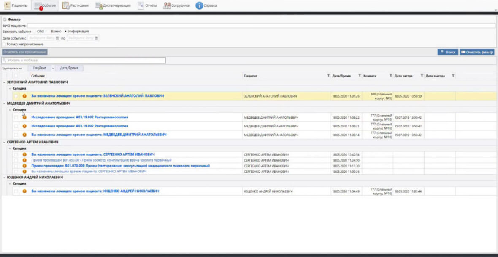
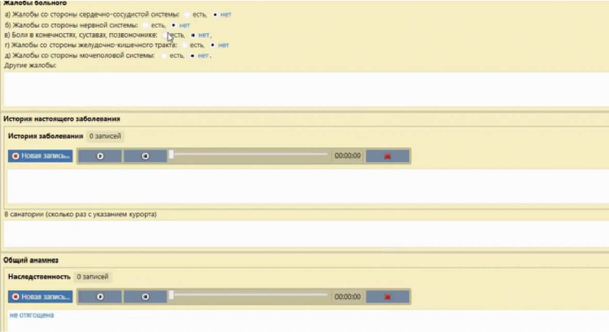
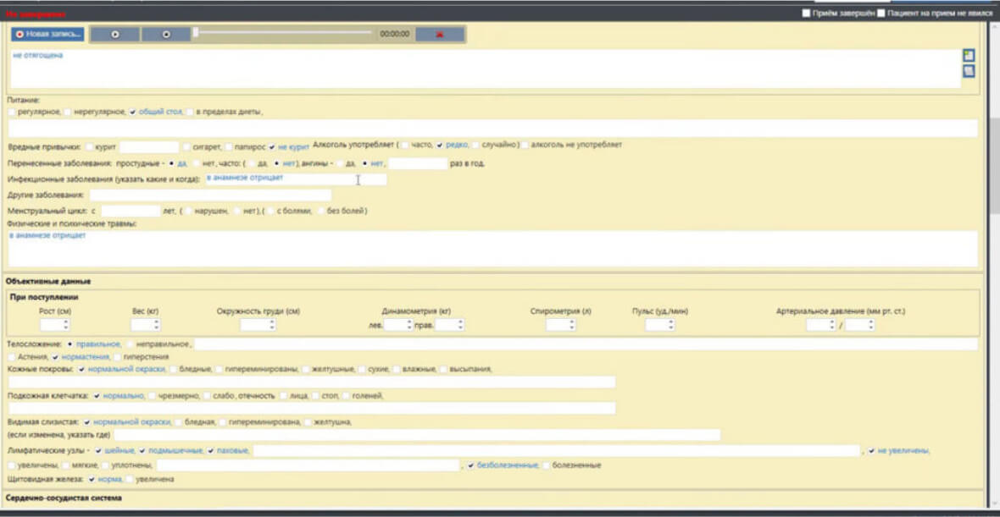
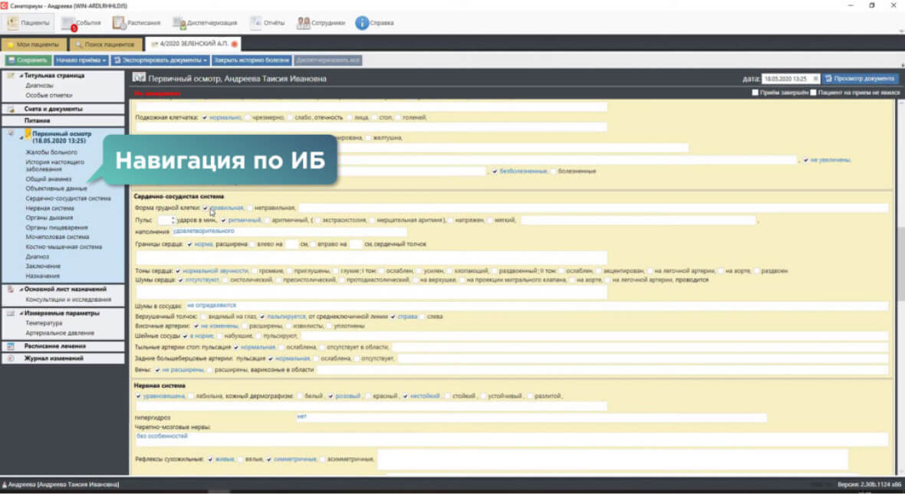
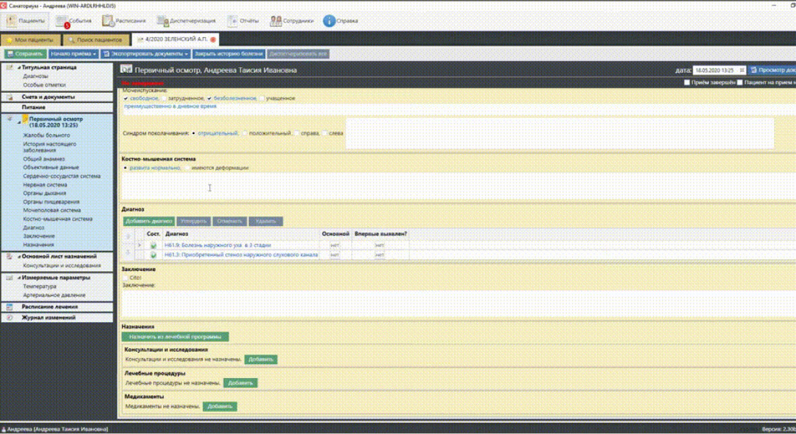
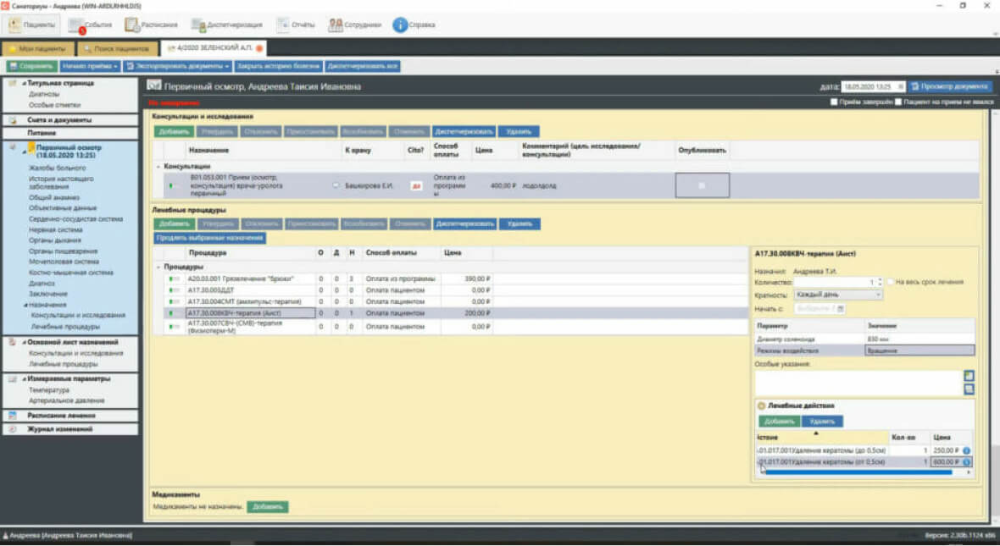
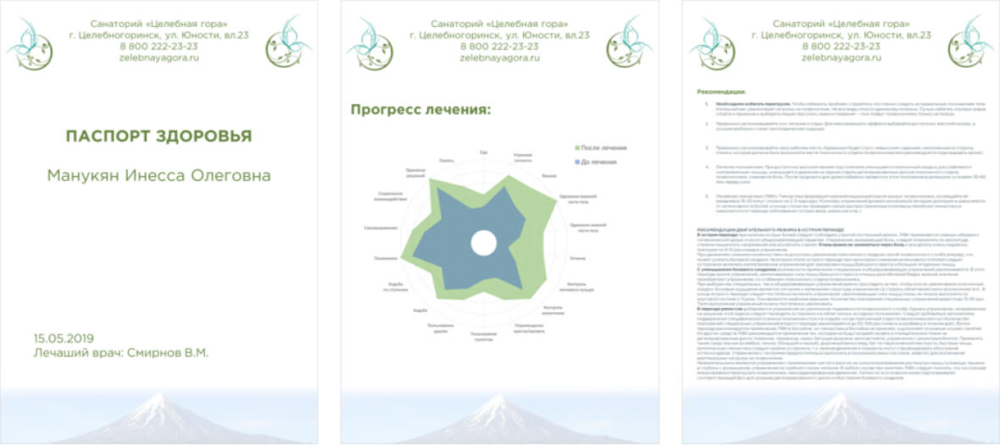

Electronic medical record
An electronic medical record (IB) is the main tool of a sanatorium doctor and the best alternative to paper workflow. In it, the doctor sees all the information on the patient, prescribes procedures with one click, dictates conclusions and comments by voice, monitors the results of laboratory and instrumental studies — instead of manually filling out dozens of documents and calling colleagues.

In the “Sanatorium” the patient’s IB is created upon check-in: fields such as “Name”, “Age”, “Gender”, “Treatment Program” are filled in at the registration desk and immediately go to the medical unit of the sanatorium, and the attending physician receives a notification that that he had a new patient. In the “Events” tab, you can track the passage of appointments by the patient: the results of examinations of narrow specialists, laboratory tests:

Initial examination of the patient
At the first appointment, the doctor fills out the form of the initial examination of the patient. Depending on the specialization of the sanatorium and the current standards, the set of fields to be filled in can be configured individually. The system is designed in such a way that doctors practically do not write anything in it: instead of manual entry, a tick is placed in the right place, or an option is selected from the drop-down menu. By default, all indicators are set to normal. Electronic IB “Sanatorium” reduces the time for filling out protocols and documents by 65% . As a result, the doctor can accept additional patients and give them more attention.
Complaints of the patient on any of the systems (cardiovascular, nervous, gastrointestinal tract, etc.)

History of the disease, general history (heredity, risk factors), objective data (weight, height, pulse, etc.)

Extended protocols for each of the systems, also filled in according to the norm by default.
Bookmarks on the left side of the screen allow you to quickly move between section

Diagnoses. In this field, all the diagnoses with which the patient entered the sanatorium are duplicated, it is possible to delete them or add them from the ICD-10 reference book. ICD-10 formulations can be changed to clinical, accepted in your institution or indicated in the sanatorium card. The corrected wording will be added to personal physician templates that can be used for patients with the same diagnosis. The templates themselves are filtered by frequency of use. There are categories of main and concomitant diagnoses, as well as those diagnosed for the first time. Below is the “Conclusion” field, which can be filled in manually or using a speech recognition system.

Appointments. Depending on the diagnoses and the acquired program, the doctor prescribes consultations (including repeated personal consultations), examinations, treatment procedures and medications for the patient. In the appropriate fields, you can select a specific specialist from the staff list, payment method (from the purchased treatment program or as an additional paid service), make additional comments / configuration / frequency of the procedure, mark “Cito!”, mark the impact zones on the schematic drawings (for example , for mud therapy or massage).

At the end of the appointment, you can print a document that will display the results of the examination and the recommendations of the attending physician. Both the doctor himself and any employee with the appropriate functionality can make a schedule of the prescribed procedures/examinations. When appointments are scheduled, they will immediately appear in the patient’s mobile application.
Check out from the sanatorium
At the final appointment, the patient receives an automatically generated discharge summary in electronic/paper form. It contains the results of all examinations, analyzes and consultations of narrow specialists, all the doctor’s recommendations for further treatment and lifestyle. Such a “Health Passport” can be issued in the style of a sanatorium with the logo and contacts of the institution, as well as adding a special progress model: the results of measuring a set of indicators before and after treatment:

Return visit to the resort
When the patient returns to the sanatorium, his data will be easy to find in the system. Without requests to the archive, without wasting time searching for the right form with analyzes. The doctor will be able to view the dynamics of changes in the state of health, see which specialists dispensed procedures and conducted consultations. Moreover, the IB database can be shared by a whole network of sanatoriums. A patient who has been treated at sanatorium “A” and who has bought a ticket to sanatorium “B” of the same network may not carry a pile of documents with him, his attending physician can easily find his medical history.